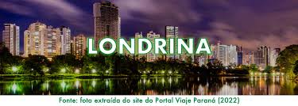
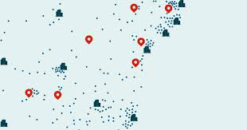
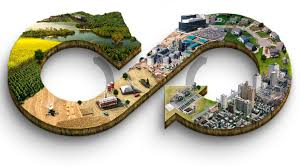

Nossa História
Desde nossa fundação, temos trabalhado para unir os mundos do campo e da cidade. Nossa jornada tem sido marcada por inovações, desafios e sucessos que moldaram a forma como vivemos e trabalhamos.
Linha do Tempo
-
2010
Início do Projeto
Fundação do Campo e Cidade com o objetivo de conectar a vida rural e urbana. Inicialmente, focamos em pesquisas e desenvolvimento de estratégias para integrar esses dois mundos.
-
2012
Primeiras Parcerias
Formação das primeiras parcerias com comunidades rurais e urbanas. Lançamento de projetos piloto para testar a viabilidade das nossas soluções integradas.
-
2015
Expansão Regional
Expansão dos nossos serviços para novas regiões. Introdução de novos produtos e soluções baseados em feedback dos nossos clientes.
-
2020
Inovação e Sustentabilidade
Foco em inovação e sustentabilidade. Implementação de tecnologias verdes e soluções para um futuro mais sustentável e equilibrado.
-
2024
Futuro e Crescimento
Continuação da expansão e fortalecimento da nossa presença em diversos mercados. Foco em novos projetos e metas para integrar ainda mais a vida rural e urbana.
História Detalhada
Nosso projeto começou com uma visão clara: criar um elo entre o campo e a cidade, aproveitando o melhor de ambos os mundos. Desde o início, enfrentamos desafios significativos, mas também celebramos grandes conquistas que nos levaram ao sucesso.
Em 2010, iniciamos com um grupo pequeno, mas apaixonado, focado em pesquisas e desenvolvimento. Com o passar dos anos, construímos uma base sólida de parceiros e clientes, expandindo nosso impacto e melhorando continuamente nossos serviços.
A inovação tem sido o nosso motor, e em 2020, marcamos uma nova fase com o lançamento de tecnologias e práticas sustentáveis que definem nossa abordagem moderna. Olhando para o futuro, estamos animados com as novas possibilidades e com o papel que continuaremos a desempenhar na integração entre o campo e a cidade.
Fotos e Imagens
  Visão para o Futuro
Estamos comprometidos em continuar nossa jornada de crescimento e inovação. Nossos planos para o futuro incluem:
- Novos Projetos: Desenvolver novas soluções para melhorar ainda mais a integração entre o campo e a cidade.
- Sustentabilidade: Continuar investindo em práticas e tecnologias sustentáveis.
- Expansão Global: Explorar novas oportunidades e mercados internacionais.